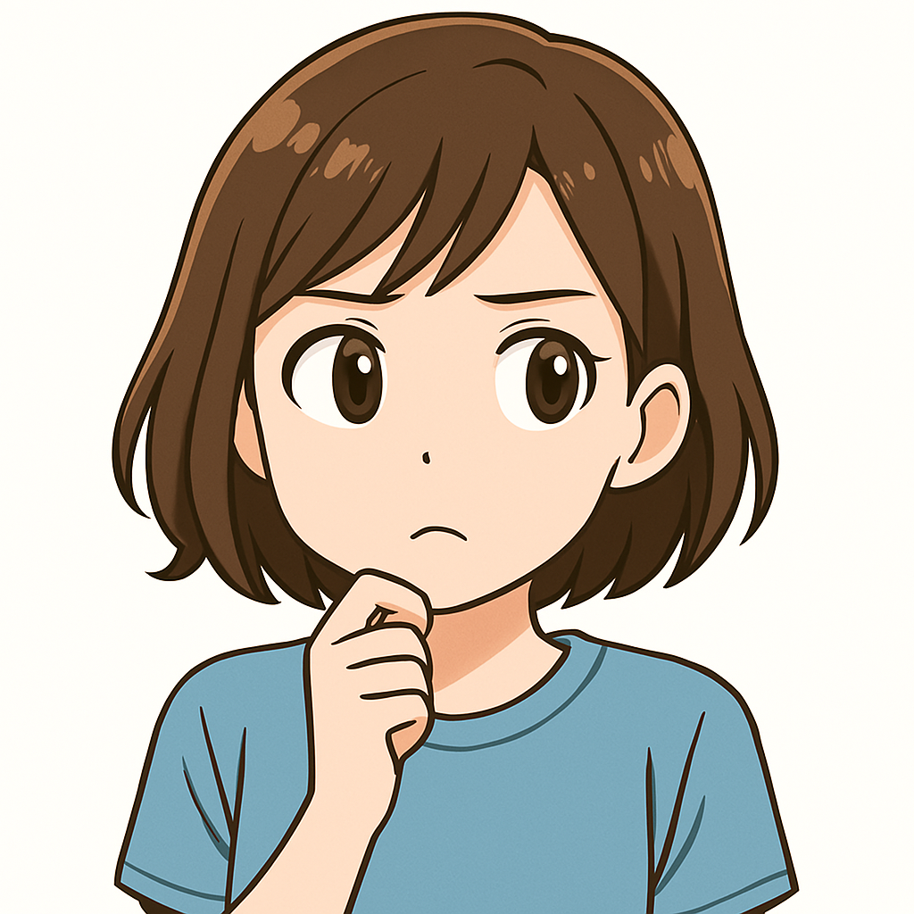
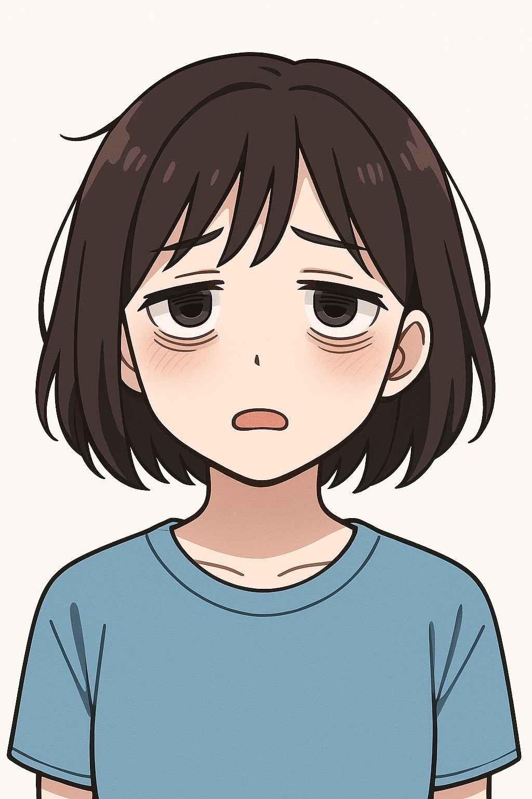
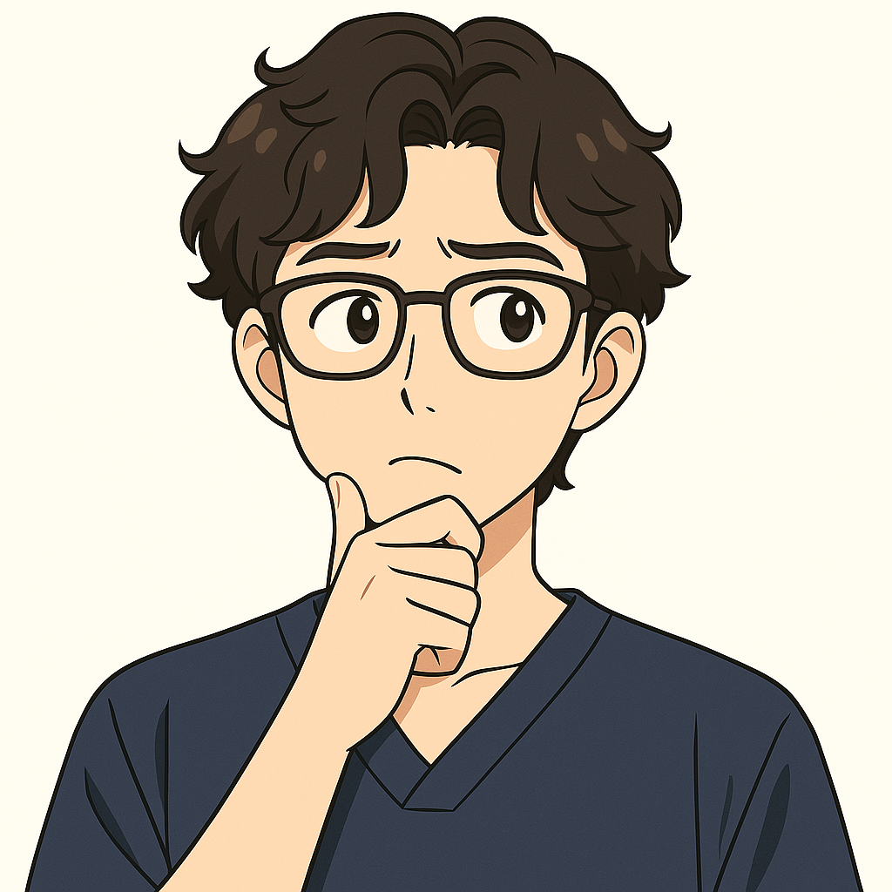

生徒：
「過去問って、どうやって手に入れるんですか？ネットに出てない学校もあって…」

先生：
「学校見学会に行くと、その場で過去問がもらえることもありますよ！直接聞いてみるのもおすすめです。」
生徒：
「問題集っていっぱいあって、何を選べばいいのか分かりません…」
先生：
「大丈夫。まずは“過去問”を見て、どんな問題が出るか知ることから始めましょう」
生徒：
「先に過去問…それなら自分のレベルも分かりそうですね！」
「私に合う問題集が分からない…」
LINEで状況を教えていただければ、あなたに合った教材をご提案します！
LINEが苦手な方は、フォームからでもご相談いただけます。
LINEで相談するフォームで相談する
問題集を選ぶときのポイント
- 過去問を見て、今の自分のレベルを知る
- “ちょっと解けそう”と思えるやさしい問題集を選ぶ
- 解説がしっかりしているか確認する
- 難しすぎる問題集は避ける（続かない原因に）
「できた！」の感覚を重ねることが、自信と合格につながります。
挫折しそうだった…そんな声も
28歳・元飲食店スタッフ：
最初に分厚くて難しい問題集を買ってしまって、1週間で挫折しそうに…。でも、マオズで“まずはこれから”とやさしい問題集を教えてもらえて、ちゃんとスタートを切れました！
31歳・社会人受験：
薄めの英語問題集を1冊だけ、くり返したのが良かったです
26歳・フリーター：
“できるかも”と思える1冊に出会えて、英語が楽しくなりました

生徒：
「本屋さんに行っても、いっぱいありすぎてどれが自分に合うのか分からなくて…」

先生：
「その気持ち、よくわかります。だからこそ、マオズでは“いっしょに探す”ことを大事にしています。迷ったら、気軽に相談してくださいね。」

生徒：
「相談してから決められるって安心です！これから本屋に行ってみますね♪」
“独学が不安”なあなたへ
問題集を選んでも「これでいいのかな…」「続けられるかな…」と不安になること、ありますよね。
マオズでは、あなたの今の状況に合わせて、一緒に学習の作戦を立てていきます。
ひとりで悩まず、まずは気軽にご相談くださいね。